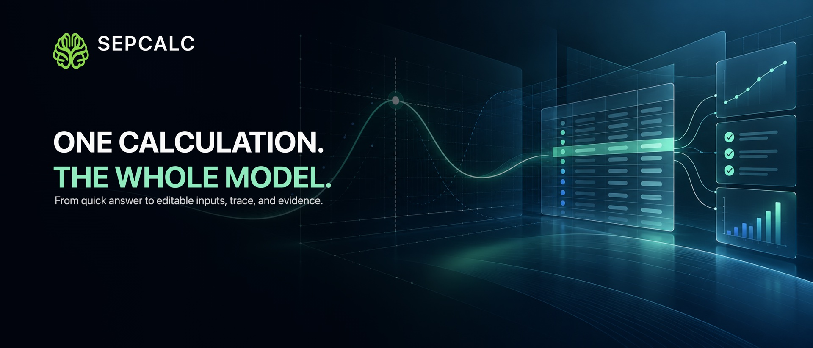

Scientific & symbolic
Exact values, complex numbers, CAS, numerical methods, matrices, units, and sourced constants.
Start with a quick calculation, then move into graphs, finance, data, symbolic math, 3D visualization, or offline Python without leaving your workspace.
Available for iPhone and iPad, with an Apple Watch companion. Free to download with optional upgrades.

Exact values, complex numbers, CAS, numerical methods, matrices, units, and sourced constants.
Interactive 2D plots, trace tools, linked tables, parameter exploration, and 3D models. See a domain-aware graph.
TVM, loans, cash flows, portfolios, valuation, and visible timing and rate conventions. See a worked loan comparison.
Typed tables, regression, inference, probability, simulation, and CSV or TSV workflows.
Run scripts and notebook-style projects with the bundled local runtime and native math tools.
Keep everyday calculation close while larger workspaces remain available on iPhone and iPad.
SepCalc keeps inputs, assumptions, units, conventions, and calculation evidence visible. Core workflows stay local, and your projects remain under your control.
SepCalc is free to download from the App Store.